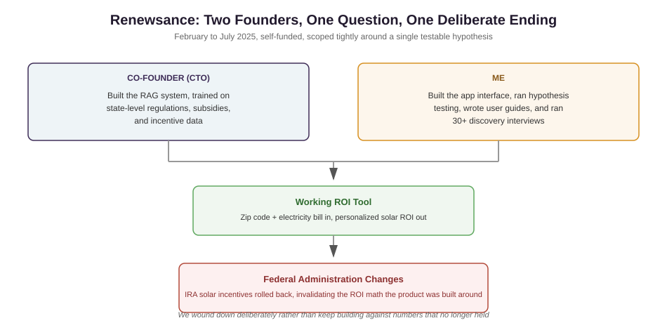

Figuring out whether solar actually makes financial sense is genuinely hard for most homeowners. It depends on state specific regulations, utility rates, subsidies, and the physical details of the house, information that's scattered and inconsistent, and not something you can piece together accurately without talking to a salesperson who has every incentive to say yes.
This was self-funded, just the two of us. There was no budget to build something broad on a hunch, so we had to scope tightly around one real question, could accurate, personalized ROI modeling actually be delivered automatically, before either of us invested any further.
My co-founder, our CTO, built the RAG system itself, trained on state level data on regulations, subsidies, and incentive programs, so someone could enter their zip code and electricity bill and get back a real ROI estimate. I built the app's interface, designed and ran the hypothesis testing that shaped what we actually needed to prove, and wrote the user guides that let early testers use it. I also ran over 30 discovery interviews with homeowners, installers, and utility experts, to check whether this was even the right problem to solve before we went further.
The system worked exactly as designed, producing real, personalized ROI estimates from actual state level data. Before we could scale past that validation stage, the federal administration changed, and the Inflation Reduction Act's solar incentives got rolled back and limited, changing the ROI math the entire product depended on. We made the call to fully wind the venture down rather than keep building on top of numbers that no longer held up.
This shows I can scope and validate something tightly under real money constraints, splitting the technical build and the go to market validation cleanly between two founders. It also shows something I think matters just as much, recognizing when something outside your control has changed the entire business case, and choosing to stop rather than keep pushing. Solar policy gets decided by government, not by how good your product is. Seeing that clearly, and acting on it fast, is the actual discipline on display here.